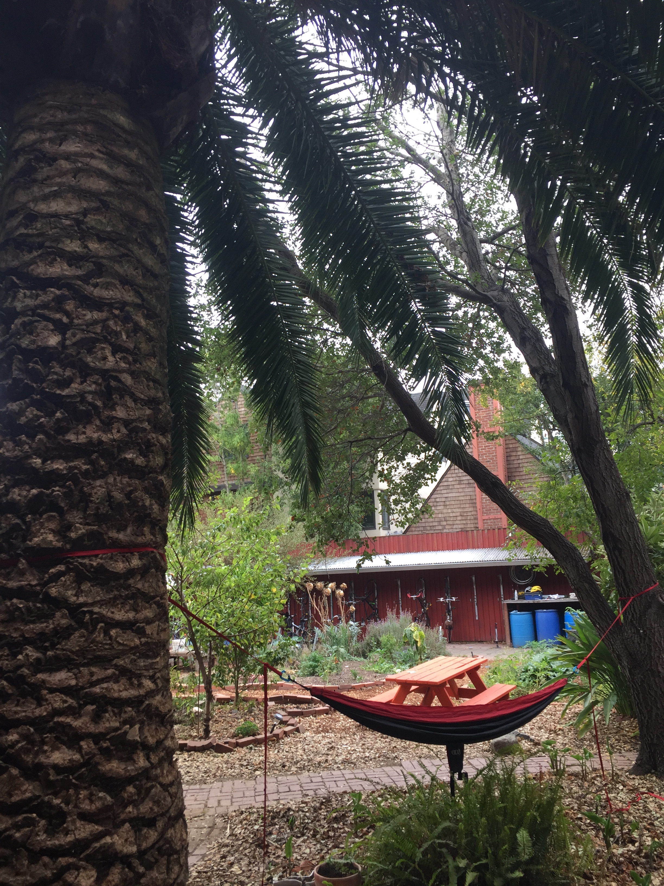

Cloyne Court Urban Garden
My House
Unlike with the grocery store, here I’m quite literally treading on familiar territory, since I live in a coop with its own garden. From time to time we would use some of the fruits and vegetables grown in our garden, namely the huge tomatoes we manage to harvest.
Often I would lay back in our hammock or sit on one of the benches to work on homework, but when I do the garden which surrounds me doesn’t come to mind all too much. However now I finally took the time to talk to my housemates whose job it is to tend to the garden and learned a lot about the plants in my own backyard.
Hannah and Isabelle love working in the garden, and it feels good that they are contributing to the space we live in as well as harvesting food that we’ll eventually use and eat in the house. For Hannah, getting her hands dirty feels meditative. Isabelle enjoys having something to take care of - in turn, the garden is taking care of her. There is some mutual nurturing going on, as she described it. For her, it’s fun to put her hands in the soil.

I asked why it seems like the plants are yielding a small amount of crops, and what type of crops we usually harvest in our garden. Usually plants yield more during the summer, which I would know if I went outside more.
Tomatoes, squash, kale, and other vegetables are our most common crops.